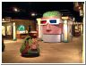

PSC 3D Exhibit
3D Exhibit Pacific Science Center: 2000
3dlogo.html

widebrain.html
bigbrain.html
standalone.html
devices.html
shutterglass.html
3dmovies.html
photography.html
viewmstrs.html
kissmekate.html
poster.html
medicalimages.html
computers.html
illusions.html
floatrings.html
sausagefngr.html
sausagefngr1.html
triangle.html
triangle2.html
holeinhand.html
holograms.html
leaplizards.html
perspective.html
perspectdrwng.html
pinscreen.html
readingtable.html
trompeloeil.html
twois1.html
visiontest.html
wide.html
Return to PSC Photos Menu
Copyright
David Taylor
2001